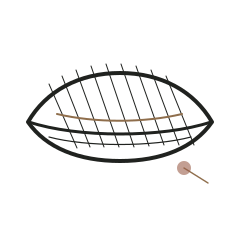
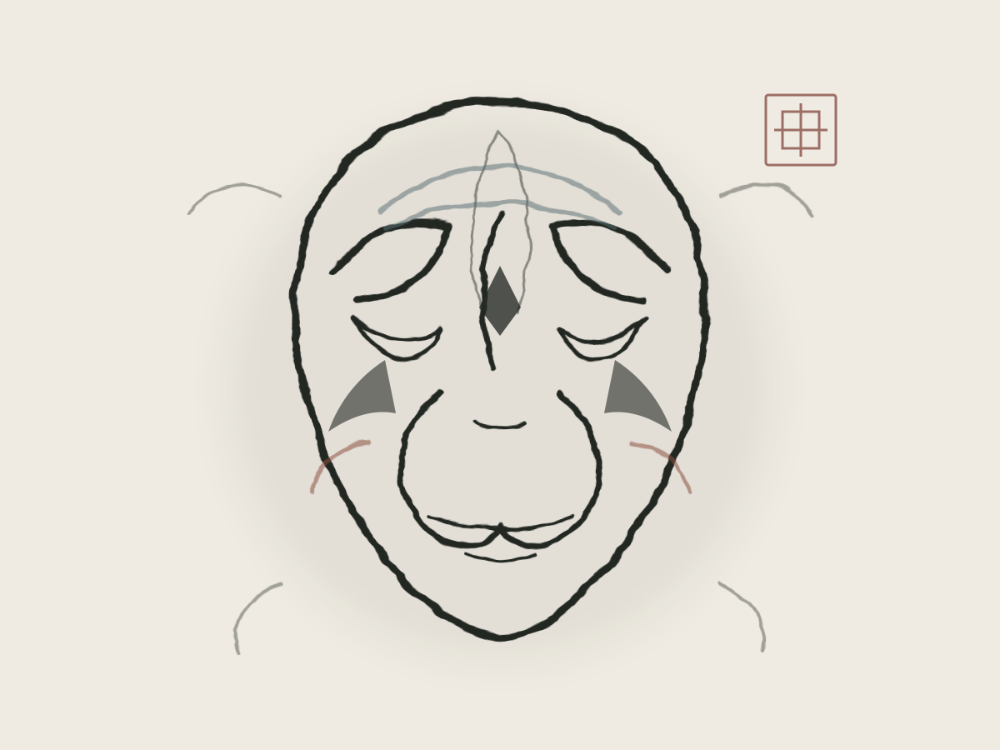
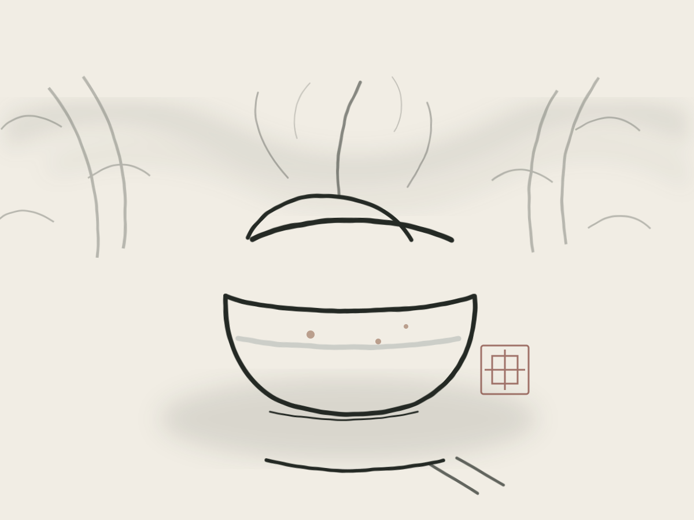

01 / SICHUAN OPERA
川剧
高腔清越，帮腔回环，一张脸在瞬息之间换了颜色。川剧把巴蜀人的热辣、机敏与幽默唱进戏里，也把“变”与“不变”留在方寸舞台。


CULTURE · 风雅成都
戏台上一转身，是川剧的千般面孔；绣绷上一落针，是蜀绣的万缕光阴。成都的文化，既在庙堂，也在茶馆与琴声之间。
FOUR ARTS · 成都四艺
川剧的变、蜀绣的细、茶馆的闲、古琴的远，共同构成成都文化的四种时间。
高腔清越，帮腔回环，一张脸在瞬息之间换了颜色。川剧把巴蜀人的热辣、机敏与幽默唱进戏里，也把“变”与“不变”留在方寸舞台。
一根丝线可劈作百缕，一尾锦鲤可在绢上摆尾。蜀绣以针代笔、以线晕色，将芙蓉、熊猫与山川绣进日常。

竹椅、方桌、盖碗茶。茶铺是成都人的客厅，也是故事开始的地方。
七弦之上，有山水，也有心境。琴声不争，却能让一室安静下来。成都的雅，正藏在这份不疾不徐里。
“此曲只应天上有，人间能得几回闻。”